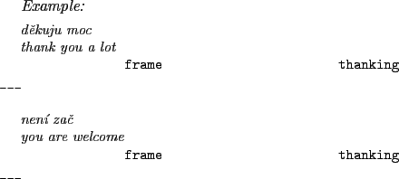
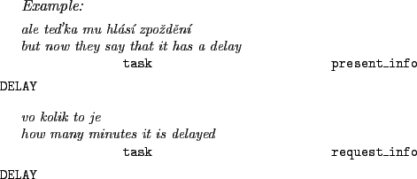
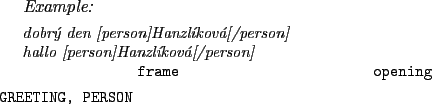

This chapter describes the human-human train timetable (HHTT) dialogue corpus. The corpus contains transcribed user's phone calls to a train timetable information center. The phone calls consist of inquiries regarding their train traveler plans. The corpus is based on dialogues' transcription of user's inquiries that were previously collected in a train timetable information center. We enriched this transcription by dialogue act tags, which comprehend abstract semantic annotation. The corpus comprises a recorded speech of both operators and users, orthographic transcription, normalized transcription, normalized transcription with named entities, and dialogue act tags with abstract semantic annotation.
First, Section 5.1 describes the human-human train timetable dialogue corpus. Second, we propose and describe a dialogue act annotation scheme including abstract semantic annotation in Section 5.2. Further, Section 5.3 elaborates on the annotation process. Next, Section 5.4 details division of the corpus into the training, development, test, and inter-intra annotator agreement data. In addition, in Section 5.5 we measure the kappa statistic on the inter-intra annotator agreement data in order to evaluate the reliability of the collected dialogue acts. Finally, on the inter-annotator agreement data we estimate the complexity of the corpus by computing the lower-bound baselines and the upper-bound ceilings in Section 5.6.
The corpus was also described in jurcicek05timetable.
The calls were collected in a train timetable information center. We had been recording the corpus since April, 2000 to September, 2000. We collected 6,584 calls from which we transcribed 6,353 calls (dialogues). Callers were mainly Czechs. A small portions of callers were from abroad (0.7%); their Czech language was heavily influenced by their native language. Therefore, we labeled this type of recordings as unsuitable for further processing.
The whole corpus contains 106 hours of speech, which is a single channel, sampled at 8kHz with A-Law compression. The average length of a dialogue is about 60 seconds. The effective user's and operator's speech (without noise and silence) is 32% and 39%. The audio files were divided into turns that start with a speaker change. The corpus consists of 81,543 turns. The size of the vocabulary of the whole corpus is about 12,000 words, and there are almost 603,000 tokens in the corpus. The operator's vocabulary (5,839 words) is smaller than user's vocabulary (9,485 words). While a dialogue has 6 user's turns on average, the first user's turn contains 35% of user's tokens in the dialogue.
Transcription was done using the Transcriber5.1 1.4.1 speech editing tool. In addition to orthographic transcription, the following non-speech sounds were marked: tongue click, lip smack, laughter, breath, background noise, silence, and unintelligible. Further, we divided each utterance into segments that allow us to assign one dialogue act to each segment. We chose orthographic transcription because it is more suitable for transcription of Czech spontaneous speech psutka04isues. Spontaneous Czech contains words and usages not found either in standard written or in formal spoken Czech.
In jelinek04spontaneous, there is described the previous work on the presented dialogue corpus. Named entities were labeled. Normalized transcription was generated automatically with the aid of a dictionary containing only formal Czech words. Only context independent normalization was performed. There also started the collection of semantic annotation for the first user's inquiry.
Defining a new annotation scheme is a challenging task that is not easy and not always desirable. Therefore, we wanted to reuse an existing annotation scheme that would fulfill the following requirements:
First of all, we were interested in DAMSL (Dialogue Act Markup in Several Layer) allen97damsl; however, DAMSL was too sophisticated for our purposes, covering many aspects of dialogue structure that were not necessarily relevant to our task. clark04multilevel states that dialogue act tagging on Switchboard data that initially started with full DAMSL scheme (about 4 million possible combination of DAMSL tags) resulted in a clustered 42 mutually exclusive dialogue act tags. The given reason was that only a minimal portion of all possible DAMSL tag's combinations had been seen. In addition, the inter-annotator agreement levels reported for this scheme were quite low. Thus, we rejected the DAMSL. Nonetheless, we decided to reuse some ideas.
Secondly, we investigated DATE (Dialogue Act Tagging for Evaluation) scheme walker00date. Each DATE's dialogue act consists of three dimensions: (1) DOMAIN, (2) SPEECH-ACT, (3) TASK-SUBTASK (sometimes referred as a FRAME domain). We found its limitations as well. Because it was originally designed for evaluation and comparison of spoken dialogue systems, it mainly focuses on human-computer dialogs. In addition, in walker00date only operator (computer system) part of COMMUNICATOR data walker01darpa was annotated. Finally, the TASK-SUBTASK dimension does not contain enough information about a particular utterance for successful control of a dialogue.
Although neither of both tagsets were suitable on their own, we adopted a combination of these two tagsets that suppresses their disadvantages and boosts their advantages. We started to build on a DATE for its simplicity and because it had been designed for task-oriented dialogues. We removed the TASK-SUBTASK dimension and replaced it with a new SEMANTIC dimension. The new dimension covers full semantic annotation. Additionally, we found necessity of new tags for annotating user's utterances and complex (human) operator's answers. Therefore, we extended tagset by a few elements borrowed from DAMSL tagset (agreement, politeness - thanking, speech-repair); it was necessary to fully cover human-human interaction. The selected tags were sufficiently clear and simple so that we believed we would be able to tag the data reliably. Because DAMSL is differently structured, some of these tags were incorporated into the SEMANTIC dimension (e.g. concepts ACCEPT, REJECT) and rest to the SPEECH-ACT dimension.
We describe the CONVERSATIONAL-DOMAIN, the SPEECH-ACT, and the SEMANTIC dimensions in three following sections.
The CONVERSATIONAL-DOMAIN dimension assigns every utterance to three areas of conversational action. We adopted this approach from DATE. The first area of CONVERSATIONAL-DOMAIN is the task domain, which is train timetable inquiry answering. The second area is the managing communication channel. Finally, the third area is the situation frame, which refers to an apology or an instruction contained in a sentence.
Task - the tag for an utterance that deals with a task completion. For example, a task utterance asks about departure time or presents departure time of a questioned train (see Table 5.1). This tag is mostly used with the following values of SPEECH-ACT dimension: request_info, present_info, offer, and acknowledgment (see Section 5.2.2).
Communication - the tag for an utterance that manages the verbal channel and provides evidence what has been understood. For example, in the early annotation stage we have found implicit confirmation very common in the corpus. A typical example is repetition of departure time. This tag is mostly used with the following values of SPEECH-ACT dimension: explicit_confirmation, implicit_confirmation, and acknowledgment.
Frame - the tag for an utterance that describes a state of a dialogue e.g. instruction, apology. As is stated in walker00date, these parts of dialogue are very common in human-computer dialogues (instructions) but rare in human-human dialogues. Nonetheless, we kept a frame value in our tagging scheme mainly to maintain compatibility with DATE. This tag is mostly used with the following values of SPEECH-ACT dimension: instruction, apology, opening, closing, thanking, speech_repair, status_report.
The SPEECH-ACT dimension refers to an utterance's communicative goal, independently on an utterance form. This dimension differentiates utterances that have the same value of the SEMANTIC dimension. For instance, the SPEECH-ACT dimension values request_info and present_info can refer to the same value in the SEMANTIC dimension, e.g. DEPARTURE(TIME, FROM(STATION)). In the following examples is presented also the abstract semantic annotation, which is described in details in Section 5.2.3.
For this dimension the following tags are defined: acknowledgment, apology, closing, explicit_confirmation, implicit_confirmation, instruction, offer, opening, present_info, request_info, speech_repair, status_report, thanking, verify, verify_neg.
Acknowledgment - this tag represents utterances which accept or reject some already mentioned information.
Apology - represents utterances containing an apology for inability to answer user's question.
Closing - represents utterances ending dialogues.
Explicit_confirmation - represents utterances which ask about already mentioned information. It is used for explicit confirmation and mainly an answer is expected.
Implicit_confirmation - represents utterances which ask about already mentioned information. It is used for implicit confirmation. It is used when someone repeats some information to confirm it, for instance the last time from the just pronounced utterance. Generally, an answer is not expected unless the repeated information is wrong.
Instruction - represents utterances consisting of instructions which say how to act, what to say, what to do.
Offer - represents utterances when an operator offers to a user some additional options which have not been requested. It is very specialized tag which is usually possible to determine only from the context.
Opening - represents utterances that open dialogues.
Present_info - represents utterances presenting some new information. It is a response to the SPEECH-ACT request_info.
Request_info - represents utterances requesting some information. It always contains an object and eventually its attributes.
Speech_repair - represents utterances containing disfluences or repetitions.
Status_report - represents utterances which are not related to the topic of the dialogue.
Thanking - represents utterances which contain thanking.

Verify - represents utterances verifying some information already mentioned. This verification should be always related to the task.
Verify_neg - represents utterances verifying some information already mentioned. This is negative complement to the SPEECH-ACT verify. It is used when the semantic content is negated and is accepted by negation. Simply, no can actually mean yes.
The SEMANTIC dimension captures task relevant information from each utterance. Our domain is train timetable inquiry answering; therefore, the goal of communication is to determine information needed to answer an inquiry, for instance a departure train station or time of a desired departure. In the utterance m�te tam n�jak� vlak do Plzn� v osm hodin r�noIs there any train to Pilsen at eight a.m.?, the semantics could be expressed by the following attribute-value pairs: REQUEST=departure, TO=Plzn�, and TIME=osm hodin r�noeight a.m..
Semantic annotation should be simple and easy to obtain. he05semantic described a semantic annotation that preserved the hierarchical structure of an utterance but it still keep simplicity. For instance, the semantic annotation of the previous sentence would be DEPARTURE(TO(STATION), TIME). Moreover, the same semantic annotation could belong to the utterance jede n�jak� sp��n� vlak do Prahy kolem �tvrt� odpoledneDoes go any train to Prague around four p.m.?. This generalization is very precious. The He's annotation is moderate to acquire. We do not need fully annotated treebank data. Dialogue transcribers have to define the semantics that represents each training utterance but they do not have to provide semantic parse trees aligned with the underlying utterance. Because abstract semantic annotation is fairly simple, transcribers do not have to have a prior linguistic knowledge. Sentence modality does not influence the abstract semantic annotation. For example, we do not distinguish between a question or an answer in abstract semantic annotation; thus, we have to assign either request-info or present-info into the SPEECH-ACT dimension.
To simplify the training of a parser, we require that the order of the abstract semantic annotation concepts must match the order of the words they correspond to. Thus, the semantics for the utterance jede kolem �tvrt� odpoledne do Prahy n�jak� sp��n� vlakDoes go any train to Prague around four p.m.? includes the same concepts as the previous example but in different order. However, for both examples the interpretation is the same.
A difficulty with this style of semantic annotation is that the abstract semantic annotation does not align the words of the utterance with the semantic concepts of the annotation.
|
In Table 5.1 is a sample dialogue annotated by the dialogue act annotation scheme. The literal English translation of the dialogue is in Table A.2.
The SEMANTIC dimension of our annotation scheme provides training data for a semantic parser. The goal of the semantic parser is to label both user's and operator's utterances. From labeled utterances, a simple algorithm should easily extract attribute-value pairs in which we are interested. Therefore, an output of the semantic parser should be the following DEPARTURE(jede n�jak� sp��n� vlak, TO(do STATION(Prahy)), TIME(kolem �tvrt� odpoledne)). The resultant parse tree is shown in Figure 5.1. The task-related details, e.g. a station, time, and train type are the most important information.
For this dimension the following concepts are defined: ACCEPT, AMOUNT, AREA, ARRIVAL, BACK, DELAY, DEPARTURE, DISCONNECT, DISTANCE, DURATION, FROM, GREETING, LENGTH, MAYBE, NEXT, NUMBER, OTHER_INFO, PERSON, PLATFORM, PREVIOUS, PRICE, REF, REJECT, REPEAT, STATION, SYSTEM_FEATURE, THROUGH, TIME, TO, TRAIN_TYPE, TRANSFER, WAIT, WHAT_TIME. You can find variations of these concepts in he05semantic.
ARRIVAL - this concept represents utterances which question or answer the question about an arrival of a train.
ACCEPT - represents positive answer, agreement, or acceptance of some fact which was mentioned, questioned, or answered in the previous utterance with the SPEECH-ACT verify or the SPEECH-ACT implicit_confirmation.
AMOUNT - represents some concrete amount of money which has to be paid, for instance, for a ticket. It is used together with the concept PRICE.

AREA - represents an area from where the user calls, mostly used in utterances labeled with the SPEECH-ACT opening.
BACK - represents a request for a return connection. For instance, a user wants a train from the city Prague to the city Olomouc but at the end wants a train from Olomouc to Prague as well.
DELAY - represents a question related to the delay of a train, or it presents information about the delay of a train.

DEPARTURE - represents a question or an answer about the departure of a train. Mostly it is used with the concepts TRAIN_TYPE, TIME, FROM, and TO.
DISCONNECT - describes a splitting of a train into two parts which continue in different directions. The parts of the train are described by the concept TRAIN_TYPE, for example TRAIN_TYPE(zadn� ��st).
DISTANCE - represents the length between two train stations. It is used together with the concept LENGTH.
DURATION - represents the duration of a journey between two train stations. It is used together with the concept TIME.

FROM - represents the departure station. It is used together with the concept DEPARTURE, ARRIVAL, and so on.
GREETING - represents a greeting. It is used only with the SPEECH-ACT opening.
LENGTH - represents the length of a journey between two train stations. It is used together with the concept DISTANCE.
MAYBE - represents an uncertain response to an utterance with the SPEECH-ACT verify or implicit_confirmation.
NEXT - represents utterance which requests information about the next train. It is used with the SPEECH-ACT request_info. It is never used with the SPEECH-ACT present_info.
NUMBER - represents some numerical value which is not used to express time. It is usually used to specify the order of some options or specify the number of a platform.
OTHER_INFO - represents utterances with semantics which cannot be described by another concepts.
PERSON - represents names or person's identification. It is used only with the SPEECH-ACT opening.

PRICE - represents the price of a train connection, supplement, or discount. This concept is used together with the concept AMOUNT.
PREVIOUS - represents an utterance which requests information about the previous train. It is used with the SPEECH-ACT request_info. It is never used with the SPEECH-ACT present_info.
PLATFORM - represents a platform or place of departure.
REF - represents a reference to already mentioned object in dialogue.
REJECT - represents utterances which reject some information. It is usually an answer to an utterance with the SPEECH-ACT verify. The concept REJECT is used very often with the concepts TIME, TRAIN_TYPE, STATION, FROM, TO, and so on.
REPEAT - represents a request to repeat some information.
STATION - represents a name of a train station. It represents not only their official names but also their local or colloquial variations.
SYSTEM_FEATURE - represents utterances in which a user checks whether an operator is able to provide some information.
TIME - represents time or date in utterances. It is either independent or connected with the concepts DEPARTURE, ARRIVAL, DURATION, and so on.
TO - represents the destination station. It is used together with the concept DEPARTURE, ARRIVAL, and so on. This concept is used also with the meaning: in direction (see the third example).
TRAIN_TYPE - represents a special property of a train connection, for instance personal train, express train, a train with supplement, and so on.
TRANSFER - represents a train connection in which you have to change from a train.
WAIT - represents the fact that a train has to wait in a train station. It is used together with the concepts STATION and TIME.
WHAT_TIME - represents a question requesting time in its answer; however, in the question is not exactly specified what time the question refers to, for example time of departure, time of arrival, and so on. It is used only for utterances with the SPEECH-ACT request_info if you cannot use the concept DEPARTURE or ARRIVAL.
To speed-up the annotation process, we developed an annotation tool to simplify the whole process. We had several requirements: a configurable task-related tagset, annotation robustness, validation of every possible input, and several different viewing modes for annotated dialogues. We required multi-platform design and easy maintenance. In Figure 5.2, the dialogue act editor (DAE) is depicted. It was written in Python language using a GUI toolkit wxPython that wraps the wxWidgets cross platform GUI library. The program was used on both Windows and Linux workstations.
We have been concerned about achieving high annotation robustness. Therefore, we implemented an overview mode in our annotation tool in which an annotator can see only dialogue acts without the utterances. Standalone dialogue acts, without utterances, should make the sense of story, and they have to be good enough to give an annotator an overview of a dialogue (see Figure 5.3). In the overview mode, we do not show even name entity values because misunderstanding to a dialogue purely from the dialogue act tags is a signal to revise, probably wrong, dialogue act annotation.
Annotation process proceeds in the following way. If an utterance contains more than one dialogue act, an annotator chops it into fragments each of which corresponds to one dialogue act (see Figure 5.4). Then the annotator has to select which dialogue act he wants to edit (see Figure 5.5). Finally, the annotator annotates the selected dialogue act (see Figure 5.6). The SEMANTIC dimension of each dialogue act is validated by a validator which can discover spelling errors and mistakenly structured semantics. After annotating the whole dialogue, an annotator overviews the dialogue. An annotator can verify dialogue semantics without being distracted by transcriptions of utterances.
We annotated 1,109 dialogues, a portion of all available dialogues. Both operators' and users' turns were annotated, about 12,935 turns. The turns were divided into 17,900 dialogue acts (utterances) in total. There are about 118,000 tokens in all annotated dialogues. The vocabulary size of the annotated dialogues is 2,872 words. The vocabulary is smaller than the vocabulary of all recorded dialogues because in the corpus there are a lot of names of train stations which occurred just one time. Thus, the vocabulary grows very fast with additional dialogues.
The dialogues were randomly divided into the training data (798 dialogues - 9,344 turns - 12,972 dialogue acts, 72%), development data (88 dialogues - 1,020 turns - 1,418 dialogue acts, 8%), and test data (223 dialogues - 2,571 turns - 3,510 dialogue acts, 20%).
In addition, we annotated a set of 50 dialogues (IAA / inter-intra annotator agreement data) different from already annotated 1,109 dialogues. The set was used for measuring reliability (inter-intra annotator agreement) of the dialogue act annotation scheme. The set consists of 912 turns - 1,326 dialogue acts. There are about 7,000 tokens in the inter-intra annotator agreement data. See Section 5.5.1 for more details.
Our annotation scheme relies on subjective judgments. As a result, we need evidence that the annotators reliably annotated the corpus. The purpose of showing that annotators reasonably agree on the annotations is that only then there is a chance that we will be able to construct a system which will reasonably replace the human annotators.
One way to measure the reliability is based on the percent agreement: the percentage of all labels in the test data where the annotators mutually agree. However, one problem with the percent agreement metric is that it does not reflect how easy the annotation is. For example, if one label, let say X, occurred 95% of all cases, then getting 95% correctness is not good enough; we could obtain 95% correct just by guessing X. In addition, if we measure reliability of human annotators on such subjective task as is the semantic annotation, we cannot expect that there is another annotator who could be considered as the Gold Standart annotator. Thus, evaluation of agreement between annotators cannot be based on the Gold Standard jurafsky00slp. In other words, it is really difficult to compare annotators which are evaluated on different test data or different tasks. Better approach is to use instead of the percent agreement the kappa statistic because it controlls the complexity of the annotation task siegel88kappa,carletta96kappa.
Kappa statistic is useful when we compare human annotators on a difficult subjective task. Kappa measures pairwise agreement among a set of annotators making category judgments, corrected for expected chance agreement: where is the proportion of times that the annotators agree and is the proportion of times that we would expect them to agree by chance. For more details see siegel88kappa. Important values for are 0 if there is no agreement other than which would be expected by chance and 1 if there is a total agreement. We have to point out that does not mean that the annotators' decisions are worthless, rather, it means that the decisions are no more consistent than we would expect by chance, and a negative value of kappa statistic reveals that the observed agreement is worse than expected by chance alone. According to krippendorf80content, the good reliability is achieved when .
According to krippendorf80content, there are two different tests of reliability with increasing strength:
To evaluate the reproducibility (inter-annotator agreement), we performed the following experiment. Three experienced annotators, who had already annotated a substantial portion of HHTT corpus, annotated the same set of dialogues. The set consisted of 50 dialogues which were randomly selected from available unannotated dialogues. The annotators did not interact with each other neither with the coding scheme developers. The resultant data are denoted as IAA (intra-inter annotator agreement) data 1, which are composed of annotations from three annotators 1, 2, and 3.
To evaluate the stability (intra-annotator agreement), we let the annotators to annotate the same set of dialogues two times, one month and many dialogues apart. The resultant data are denoted as IAA (intra-inter annotator agreement) data 2. Again, they composed of annotations from annotators 1, 2, and 3.
As we mentioned in the previous sections, the dialogue act annotation scheme involves:
First of all, annotators have to agree on turn segmentation into dialogue acts. Kappa statistic is used to measure agreement on weather or not the word boundaries are also the dialogue act boundaries.
For example, we present two segmentations (S1, S2) of the turnGood afternoon, I would like to ask about to Beroun ehm the train was usually leaving around quarter to eleven. Right?: No dobr� den, pros�m v�s j� bych se v�s cht�l zeptat do Berouna ��k vlak von jezdil ��k ve t�i�tvrt� na jeden�ct. Vi�te?
S1: no dobr� den | pros�m v�s j� bych se v�s cht�l zeptat do Berouna S2: no dobr� den | pros�m v�s | j� bych se v�s cht�l zeptat do Berouna S1: ��k vlak | von jezdil ��k ve t�i�tvrt� na jeden�ct vi�te S2: ��k vlak von jezdil ��k ve t�i�tvrt� na jeden�ct | vi�te |
The kappa statistic for the stability is given in Table 5.2 and the kappa statistic for the reproducibility is in Table 5.3.
|
To measure the kappa statistic of the CONVERSATIONAL-DOMAIN dimension, we used only the dialogue acts (units of turns) for which the annotators agreed on the turn segmentation. The CONVERSATIONAL-DOMAIN dimension of a dialogue act can be labeled by one from three labels (task, communication, and frame).
The kappa statistic for the stability is presented in Table 5.4 and the kappa statistic for the reproducibility is presented in Table 5.5.
|
|
To measure the kappa statistic of the SPEECH-ACT dimension, we used again only dialogue acts for which the annotators agreed on the turn segmentation. The SPEECH-ACT dimension of a dialogue act can be labeled by labels which are described in Section 5.2.2.
The kappa statistic for the stability is presented in Table 5.6 and the kappa statistic for the reproducibility is presented in Table 5.7.
|
|
To measure the kappa statistic of the SEMANTIC dimension, we used again only the dialogue acts for which the annotators agreed on the turn segmentation. Two semantics are considered equal only if they exactly match each other. The exact match is very tough standard because a small difference or complete difference is treated in the same way. For example, under the exact match the difference between the semantics ARRIVAL(TIME, FROM(STATION)) and ARRIVAL(TIME, TO(STATION)) is equal to the difference between the semantics ARRIVAL(TIME, FROM(STATION)) and DEPARTURE(TRAIN_TYPE).
The kappa statistic for the stability is presented in Table 5.8 and the kappa statistic for the reproducibility is presented in Table 5.9.
|
|
To estimate the complexity of the corpus, we computed the lower-bound baseline and the upper-bound ceiling for each dimension of our dialogue act annotation scheme. The lower-bound baseline is set by a naive decoder which assigns to any input the most apriori probable annotation for a particular dimension. The ceiling can be set by how well human annotators do on the task.
Without the lower-bound baseline and the upper-bound ceiling, we cannot correctly interpret a performance of a semantic parser. For example, if we observe that a semantic parser performs 60% in CAcc, we still do not know how good the parser is because it can be still worse than the lower-bound baseline or on the other hand we have already reached the upper-bound ceiling so that we can hardly expect additional improvement.
To estimate the percent agreement of the lower-bound baseline, we use the most apriori probable label of the CONVERSATIONAL-DOMAIN dimension in the training data. Consequently, the label is used as an output of a naive lower-bound baseline decoder. Then, we measure the percent agreement of this naive output against the CONVERSATIONAL-DOMAIN dimension from the test data.
In Table 5.10, we present the labels from the CONVERSATIONAL-DOMAIN dimension sorted by the probability of the occurrence of a label in the training data. The most probable label is the label task, which occurred in the training data 53.7% of the time on the training data.
|
The measured performance of the naive decoder of the CONVERSATIONAL-DOMAIN dimension, which output is only the label task, is 54.1% in the percent agreement on the test data. In other words, any decoder of the CONVERSATIONAL-DOMAIN dimension should get more than 54.1% in the percent agreement on the test data; otherwise, it would be simply better to always label the CONVERSATIONAL-DOMAIN dimension by the label task.
To evaluate whether one of the annotators is not biased, we measured the percent agreement of the output from the naive decoder against the IAA data (against each annotator on both data 1 and 2). Tables 5.11 and 5.12 show the results, which are not significantly different (-value 0.01).
0.01).
|
|
To estimate the percent agreement of an upper-bound ceiling, we can conveniently use the IAA data because we have the same set of dialogues annotated by three annotators. For example, we can use annotation from one annotator as the gold standard and measure the percent agreement of the annotation from another annotator against the gold standard. In this case, we can think of it as if we constructed a decoder which has performance of a human annotator. If we evaluate the mutual performance for all combinations among our three annotators, we get the percent agreement values for the pairs of annotators 1-2, 1-3, and 2-3.
In Tables 5.13 and 5.14, we report the mutual performance, which is not significantly different (-value 0.01). We can see that the mutual annotators' performance was about 96% in the percent agreement. This suggest that there is about the 4% margin in the percent agreement. Consequently, our goal should not be to achieve 100% but it should be more modest, to reach only 96% because the training data are not consistent enough to reach 100%.
0.01). We can see that the mutual annotators' performance was about 96% in the percent agreement. This suggest that there is about the 4% margin in the percent agreement. Consequently, our goal should not be to achieve 100% but it should be more modest, to reach only 96% because the training data are not consistent enough to reach 100%.
|
|
Similarly to Section 5.6.1, we use the most apriori probable label of the SPEECH-ACT dimension in the training data to estimate the percent agreement of the lower-bound baseline. Consequently, the label is used as an output of a naive lower-bound baseline decoder. Then, we measure the percent agreement of this naive output against the SPEECH-ACT dimension from the test data.
In Table 5.15, we present the labels from the SPEECH-ACT dimension sorted by the probability of the occurrence of a label in the training data. The most probable label is the label present_info, which occurred in the training data 27.5% of the time on the training data.
|
The performance of the naive decoder, which output is only the label present_info, of the SPEECH-ACT dimension is 27.3% in the percent agreement on the test data.
To evaluate whether one of the annotators is not biased, we measured the percent agreement of the output from the naive decoder against the IAA data. Tables 5.16 and 5.17 show the results, which are not significantly different (-value 0.01).
0.01).
|
|
We estimate the upper-bound ceiling for the SPEECH-ACT dimension similarly as in Section 5.6.1. In Tables 5.18 and 5.19, we report the mutual performance, which is not significantly different (-value 0.01). We see that the mutual annotators' performance was about 95% in the percent agreement. As a consequence, there is about the 5% margin in the percent agreement.
0.01). We see that the mutual annotators' performance was about 95% in the percent agreement. As a consequence, there is about the 5% margin in the percent agreement.
|
|
Similarly, to estimate SAcc and CAcc of the lower-bound baseline, we use the most apriori probable semantic annotation of the SEMANTIC dimension in the training data. We consider semantics as an output of some naive lower-bound baseline semantic parser. Consequently, we measure SAcc and CAcc of this naive semantic output against the test data.
First of all, we present the most apriori probable semantic annotations in Table 5.20. The best candidate for the naive semantic output is the semantics TIME which was the most often in the training data.
|
The performance of the naive semantic parser using only abstract semantics TIME is 17.3% in SAcc and 26.0% in CAcc on the test data. The value of CAcc is much higher than the value of SAcc because the concept TIME occures very often in semantics which contain additional concepts to the concept TIME (see Table 5.20) and the CAcc measure takes this fact into account.
To evaluate whether one of the annotators is not biased, we measured SAcc and CAcc of the naive semantics against the IAA data (against each annotator on both data 1 and 2). Tables 5.21 and 5.22 show the results, which are not significantly different (-value 0.01).
0.01).
|
|
Because the topic of this thesis is semantic parsing, we present in Chapter 7 a more sophisticated baseline, which we significantly improve in both SAcc and CAcc in the following chapters.
Again to estimate SAcc and CAcc of the upper-bound ceiling, we can use the IAA data because we have the same set of dialogues annotated by more than one annotator. We use annotation from one annotator as the gold standard and measure SAcc and CAcc of annotations from another annotator against the gold standard. In this case, we can think of it as if we constructed a semantic parser with human annotator performance. If we evaluate the mutual performance for all combination among three annotators, we get SAcc and CAcc values for the following pairs of annotators 1-2, 1-3, and 2-3.
In Tables 5.23 and 5.24, we report the mutual performance, which is not significantly different (-value 0.01). We see that the mutual annotators' performance was about 85% in SAcc and 91% in CAcc. This suggest that there is about 9% margin in CAcc. As a result, our goal should not be to achieve 100% in CAcc but the goal should be more modest to reach only 91% in CAcc. As we already mentioned, we believe that the upper-bound ceiling for the test data is roughly the same.
0.01). We see that the mutual annotators' performance was about 85% in SAcc and 91% in CAcc. This suggest that there is about 9% margin in CAcc. As a result, our goal should not be to achieve 100% in CAcc but the goal should be more modest to reach only 91% in CAcc. As we already mentioned, we believe that the upper-bound ceiling for the test data is roughly the same.
|
|